Cracking of Clays During Drying
The best way to avoid drying cracks when making ceramics or pottery is to avoid doing the things that cause it. Do not just blame the clay, anything can technically be dried.
Details
Here are some factors that contribute to drying problems:
- Using a clay that is more plastic than you need.
- Using clay that is too soft.
- Making your own clay and not mixing it well enough.
- Not wedging well enough.
- Making large pieces, especially flat ones having a big diameter.
- Making ware of uneven thickness and cross section.
- Sharp convex angles on contours.
- Failure to finish edges (tiny splits provide places for cracks to start).
- Joining sections poorly.
- Allowing the drying of thinner or exposed sections of ware to get ahead during early stages (after forming).
- Uneven drying.
- A dry climate or drafty work area.
The less all of these are true in your case the better drying experience you will have. Notice that 'fast drying' is not considered an issue, "uneven drying" is the problem. If you can fast-dry ware evenly you will have better success than slow-drying ware unevenly.
Related Information
It is impossible to dry this clay. Yet we did it. How?
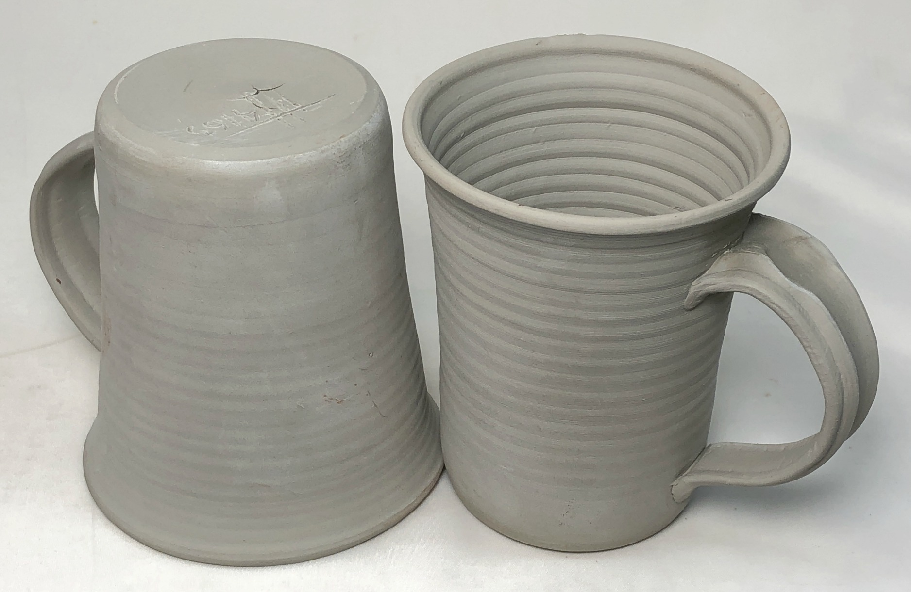
This picture has its own page with more detail, click here to see it.
These are made from a 50:50 mix of bentonite and ball clay! The drying shrinkage is 14%, more than double that of normal pottery clay. These should have cracked into many small pieces. Yet notice that the handle joins with the walls are flawless, not even a hairline crack (admittedly the base has cracked a little). Remember that the better the mixing and wedging, the smaller the piece, the thinner the walls, the more even wall thickness, the better the joins, the fewer the sharp contour changes, the more even the water content is throughout the piece (during the entire drying cycle) and the damper the climate the more successful drying will be. What did it take to dry these in our arid climate? One month under cloth and plastic, changing the cloth every couple of days. Implementing these same principles on a normal clay body will assure drying success.
Cross section is an important factor in avoiding cracks
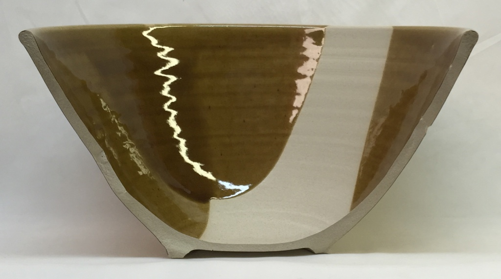
This picture has its own page with more detail, click here to see it.
The cross section of a bowl. For the best success in drying and firing, it is advantageous to have as even of a thickness as possible. But it is also important not to have sharp concave angles. It would have been possible to make the section outside the foot ring thinner by creating a more abrupt concave contour, but that contour, if too sharp, could offer a point of weakness where a crack could start.
One reason why stoneware clays are more convenient

This picture has its own page with more detail, click here to see it.
Fewer drying cracks! These were all made at the same time and dried in the same way. Left: Three out of five porcelain mugs have cracked on the bottoms! Right: None of the stoneware ones have. Sometimes I feel as if those are "crying cracks" instead of "drying cracks". Of course, I could have been more careful with the porcelain. But I keep forgetting items on the "drying success checklist"! So, for production, it makes sense to use a stoneware if at all possible. I can make hundreds of mugs using the body on right, M340, and will not lose a single one!
Wanna throw porcelain plates with thick bottoms and thin rims?
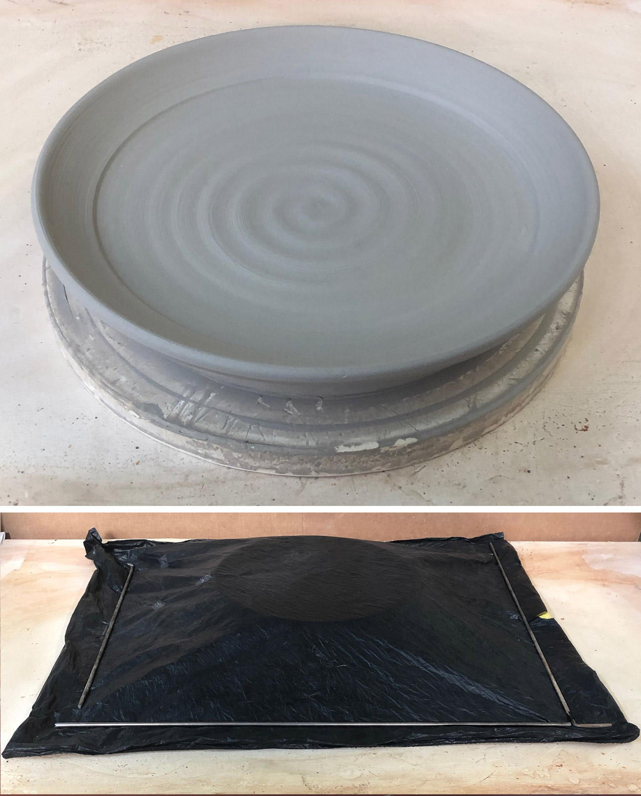
This picture has its own page with more detail, click here to see it.
They need ten days to dry in our climate! This 14" plate has been thrown with a 1" thick base. The rim is a quarter of that. During the first few hours, the rim would dry quickly, leaving the base far behind. So as soon as it will support the weight of a cover-cloth I put it under that and plastic for several days. After that has to be cut off with a wire (there is a lot of clay here, it waterlogs the bat). The rim is stiff enough to support it for trimming but the base will still be quite soft. Thus, it is doubly important to trim it deep enough to create a cross-section of even thickness. Then, to try to even out the water content between base and rim I place it under layers of cloth and under plastic for several more days. Finally, out of the bag, it dries, with cloth still covering it. Even then, the base may bow upwards or crack. These are difficult, there is no getting around it!
An example of an S-crack in the bottom of a fired porcelain mug
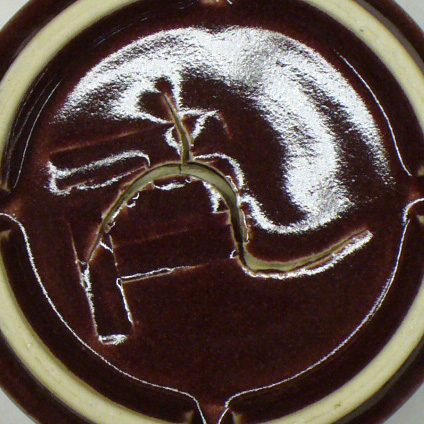
This picture has its own page with more detail, click here to see it.
Its shape, growth during the firing and penetration of glaze down into the crack demonstrates it preexisted firing (happened during the drying).
Clay cracking often happens because of uneven drying, not lack of grog
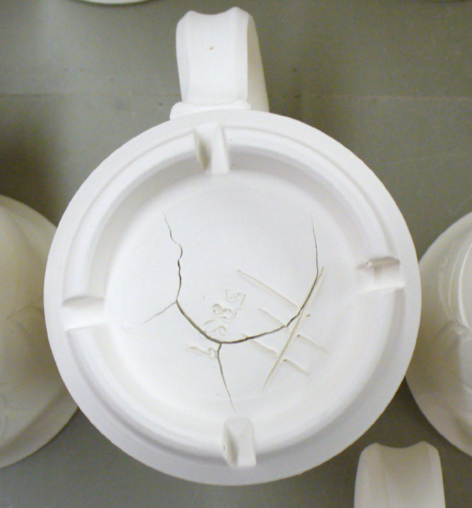
This picture has its own page with more detail, click here to see it.
Using a grogged body for making functional pottery is misguided. Unless very large pieces are being made it makes little sense to add the inconveniences of having a gritty material in your clay. Any normal smooth commercial pottery clay will dry without cracking if ware is dried evenly.
This horizontal crack began as stresses created during uneven drying
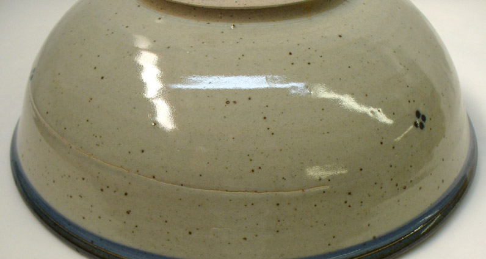
This picture has its own page with more detail, click here to see it.
The rim was allowed to get ahead of the base. A thinner section (that happened during throwing) was exploited by the stresses and a crack appeared during heatup, likely during the bisque.
Stonewares dry better than porcelains
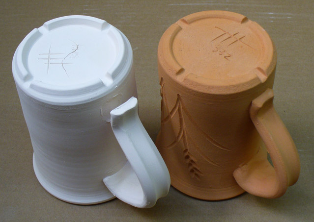
This picture has its own page with more detail, click here to see it.
The plastic porcelain has 6% drying shrinkage, the coarse stoneware has 7%. They dried side-by-side. The latter has no cracking, the former has some cracking on all handles or bases (the lower handle is completely separated from the base on this one). Why: The range of particle sizes in the stoneware impart green strength. The particles and pores also terminate micro-cracks.
It dry shrinks much more yet cracks less. How is that possible?
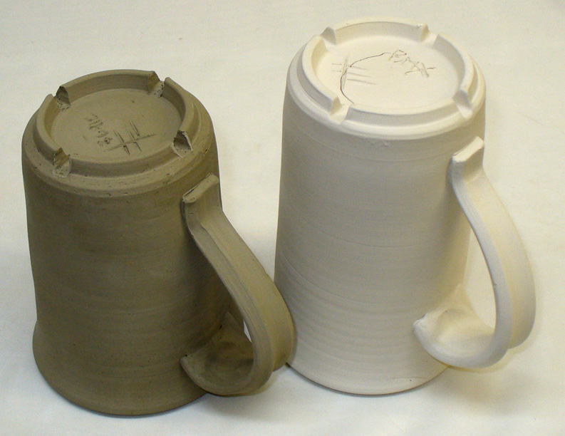
This picture has its own page with more detail, click here to see it.
Two mugs have dried. The local terra cotta native clay on the left shrinks 7.5% on drying, the porcelain one on the right only 6% (it is made using Kentucky ball clay). Yet few pieces of the terra cotta are ever lost due to drying cracks, even if it is uneven! For example, in a batch of a dozen mugs none of these will be lost whereas one or two of the white ones will always crack. Why? Dry strength. The clay on the left is very strong in the dry state, likely double or triple the white clay (the strength is a by product of its high plasticity and particle size distribution profile). That strength is enough to more than counter the extra shrinkage.
Do grog additions always produce better drying performance?
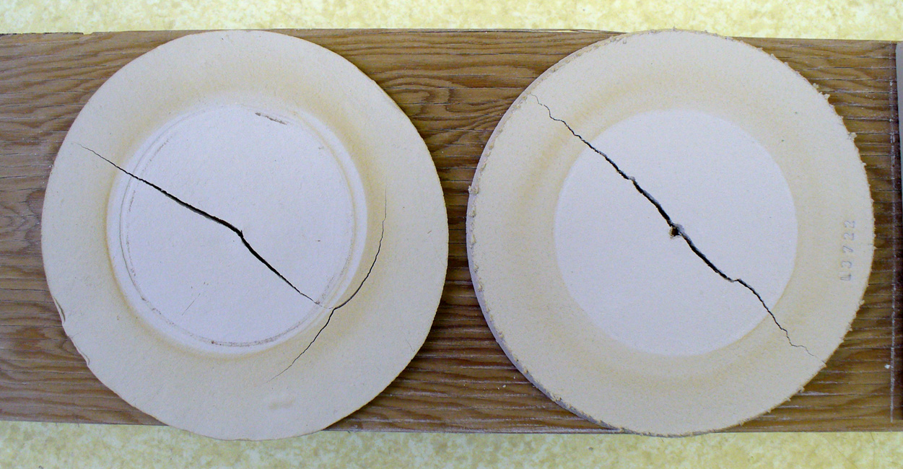
This picture has its own page with more detail, click here to see it.
This DFAC test for drying performance compares a typical white stoneware body (left) and the same body with 10% added 50-80 mesh molochite grog. The character of the crack changes somewhat, but otherwise, there is no improvement. While the grog addition reduces drying shrinkage here by 0.5-0.75% it also cuts dry strength (as a result, the crack is jagged, not a clean line). The grog vents water to the surface better, notice the soluble salts do not concentrate as much. Notice another issue: The jagged edges of the disk, it is more difficult to cut a clean line in the plastic clay.
How can Craft Crank sculpture clay be so plastic and smooth with this much grog?
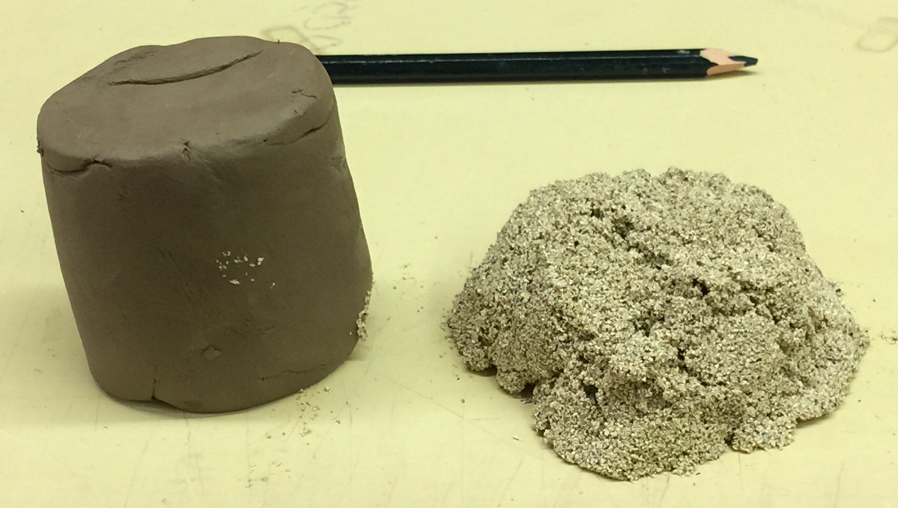
This picture has its own page with more detail, click here to see it.
The super-smooth clay on the left is "Industrial Crank" from Potclays in the UK, I have removed the grog (our test code number L3868). First I did our standard tests on that body, then I dried some, slaked it in water, screened the grog out and then dewatered the remaining clay to plastic form. The grog yielded weighed the same as the clay portion of the recipe yet this body is known for amazing workability and toughness! How is that possible with so much aggregate in the recipe? The base clay body is extremely smooth, sticky and highly plastic. Mixtures of just ball clay and feldspar (e.g. 75:25) will yield this type of material, some ball clays will produce as little as 6% drying shrinkage using this ratio. The grog they use is also special: The particles have angular shapes and a narrow range of sizes, from about 35 mesh to 70 mesh (most is of the coarsest size). This narrow range of sizes means dramatically less particle surface area. These factors produce much less disruption of the plastic properties of the base clay. How could you make a body like this? Slurry up about 75% ball clay and 25% feldspar and wedge the grog into that.
Do you really need a grog body for sculpture?
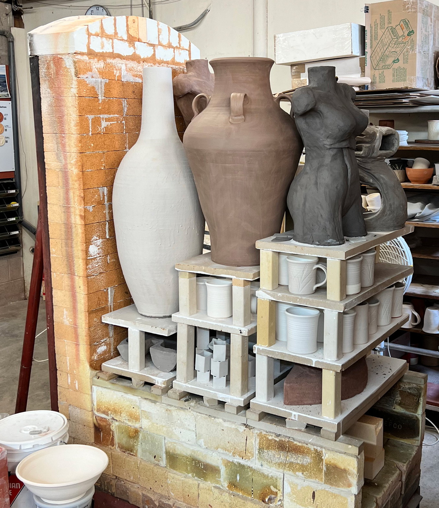
This picture has its own page with more detail, click here to see it.
These were all made in our studio. All were dried evenly as possible and are awaiting firing. The tall white vase weighs 21kg, built in four pieces, using H550, by Toludare Toluwalope. The brown vase was made by Kat Valenzuela, it weighs 27kg and is made of H440. The torso was made by Grace Warren, it weighs 13kg and is made of H441G (it contains minimal grog of fine particle size). Another torso behind of similar weight is made of H440. Her other piece behind the front torso weighs 25kg and has varying thick and thin sections, it is made of Tapper clay (sold to the smelting industry). None of these pieces had any significant cracks during drying or firing.
Drying cracks in bricks - but no data to determine best response
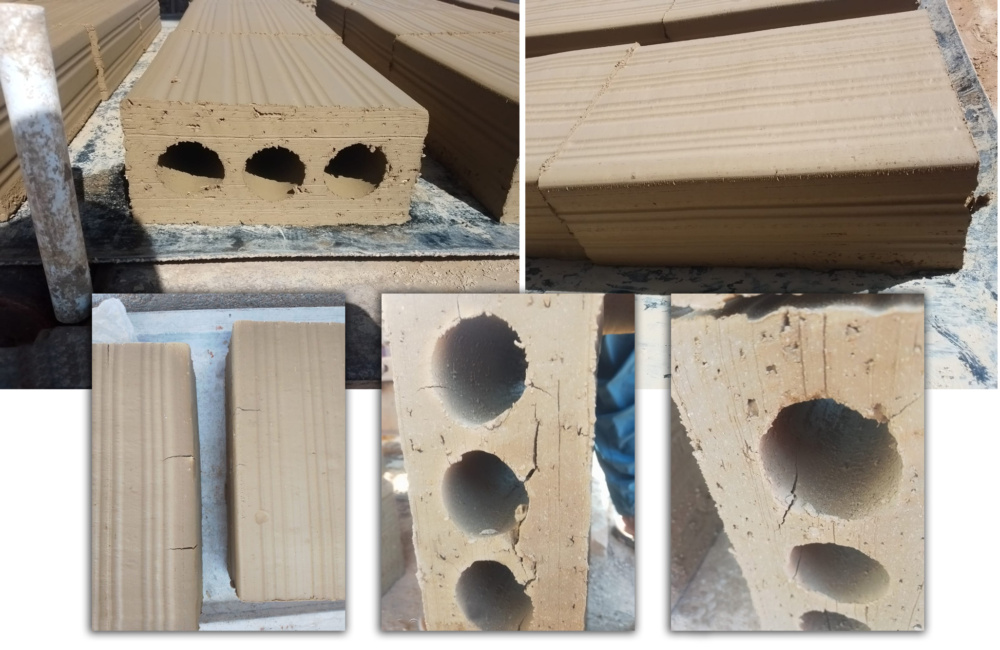
This picture has its own page with more detail, click here to see it.
These bricks were being extruded in India and the plant was suffering drying cracks. A consultant recommended a high percentage addition of lignosulphonate, at a cost of $800/ton, as a solution. But before adding such a large expense, some obvious changes seemed in order first. The technician knew the plasticity index of the clay (a measurement used for soils) but he did not have records of its drying shrinkage, water permeability, drying strength or drying performance - when problems like this arise such data provides direction and help answer questions. For example, is cracking happening because of lack of drying strength or plasticity or because drying shrinkage is too high. The splitting along the corner of the extrusion is a clue that plasticity could be lacking - that could be solved by a small bentonite addition or reduction in grog. If permeability is low an increase in grog might be needed (if the pugmill can still extrude slugs with a smooth edge and corner). Notice the cracks that start from those splits (lower left). But also notice how the top edge has shrunk while the center section has not. That indicates the drying process is not tuned to subject all surfaces to equal airflow (sure enough, these are being dried outside in the sun and wind). Another factor is cross-section: The round holes create variations in thickness that exceed 300%, square holes with rounded corners would be better. Given the location, economic realities and past success this one change might be enough to make a big difference.
Links
| Firing Schedules |
Plainsman Electric Bisque Firing Schedule
Three-step to 1832F |
| Glossary |
Drying Performance
In ceramics, drying performance is very important to optimizing production. More plastic clays shrink more and crack more, but they are also better to work with. |
| Articles |
Drying Ceramics Without Cracks
Anything ceramic ware can be dried if it is done slowly and evenly enough. To dry faster optimize the body recipe, ware cross section, drying process and develop a good test to rate drying performance. |
 PayPal | No tracking, No ads, No paywall, No transient content! Just organized, concise information constantly updated and improved. Was this helpful? Consider supporting me. |
| By Tony Hansen Follow me on        |  |
Got a Question?
Buy me a coffee and we can talk 

https://digitalfire.com, All Rights Reserved
Privacy Policy